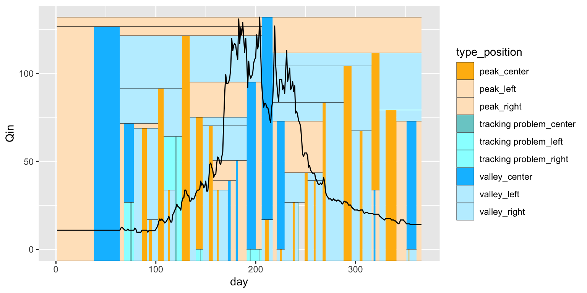
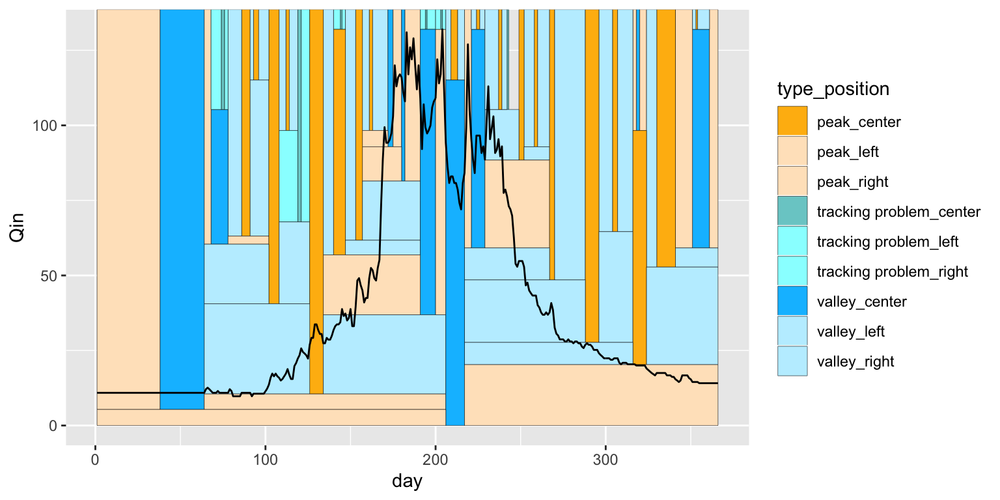
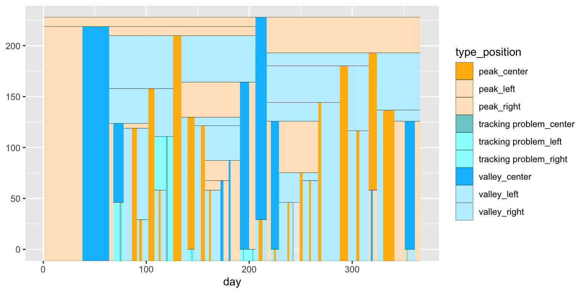
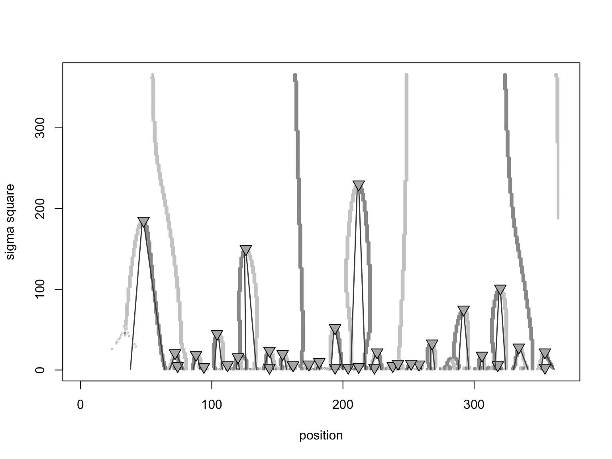

grwat package contains tools for performing scale space analysis of hydrograph. Initially developed by Witkin (1984), scale space transformation allows decomposition of a signal into hierarchically arranged multiscale components. You can use this tool to decompose, classify and compare hydrographs.
Currently grwat depends on Scale4C (Walter 2019) package from Biconductor.
First, use grwat::ss_transform() to get scale-space transformation for selected year and sigma (which is interpreted as maximum standard deviation in day units used for smoothing):
library(grwat) #> Загрузка требуемого пакета: magrittr #> Загрузка требуемого пакета: ggplot2 #> Welcome to grwat package for hydrograph separation and analysis tab = read_separation('/Volumes/Work/_grwat/2018/in/6_Terek/Baksan/AllGrWat.txt') (sst = ss_transform(tab, year = 2016, sigma = 365)) #> The viewpoint seems to be close to the start of the chromosome, please check if the data is correct #> 4C-seq scale space data #> Type: Scale4C #> Viewpoint: 2016 : 1 #> Number of total fragments: 366 #> Points of interest: 0 #> Maximum sigma of fingerprint map: 365 #> Number of singularities: 34
Second, use grwat::ss_tree() to obtain a scale-space tree as a tibble object suited for visualization and analysis:
(tree = ss_tree(sst)) #> # A tibble: 204 x 8 #> id position idrect type type_position day smin smax #> * <int> <chr> <chr> <chr> <chr> <dbl> <dbl> <dbl> #> 1 1 left 1_left tracking prob… tracking problem_le… 140 0 1 #> 2 1 left 1_left tracking prob… tracking problem_le… 144 0 1 #> 3 1 center 1_center tracking prob… tracking problem_ce… 144 0 1 #> 4 1 center 1_center tracking prob… tracking problem_ce… 145 0 1 #> 5 1 right 1_right tracking prob… tracking problem_ri… 145 0 1 #> 6 1 right 1_right tracking prob… tracking problem_ri… 147 0 1 #> 7 2 left 2_left tracking prob… tracking problem_le… 191 0 1 #> 8 2 left 2_left tracking prob… tracking problem_le… 194 0 1 #> 9 2 center 2_center tracking prob… tracking problem_ce… 194 0 1 #> 10 2 center 2_center tracking prob… tracking problem_ce… 195 0 1 #> # … with 194 more rows
Third, use grwat::plot_ss() to plot resulting scale-space tree over the initial hydrograph:
plot_ss(tree, tab, year = 2016)

To inverse the scale space tesselation on Y axis, set inverse = TRUE:
plot_ss(tree, tab, year = 2016, inverse = TRUE)

It is possible to plot scale space tesselation without hydrograph. Just omit df and year parameters in your call:
plot_ss(tree)

You can also plot a fingerprint map from which a scale space tesselation was traced back, using Scale4C::plotTraceback() (set fileName = "" to force plotting on screen device instead of a file):
Scale4C::plotTraceback(sst, fileName = "")

Walter, Carolin. 2019. Scale4C: An R/Bioconductor Package for Scale-Space Transformation of 4C-Seq Data.
Witkin, A. 1984. “Scale-Space Filtering: A New Approach to Multi-Scale Description.” In ICASSP ’84. IEEE International Conference on Acoustics, Speech, and Signal Processing, 9:150–53. San Diego, CA, USA: Institute of Electrical and Electronics Engineers. https://doi.org/10.1109/ICASSP.1984.1172729.